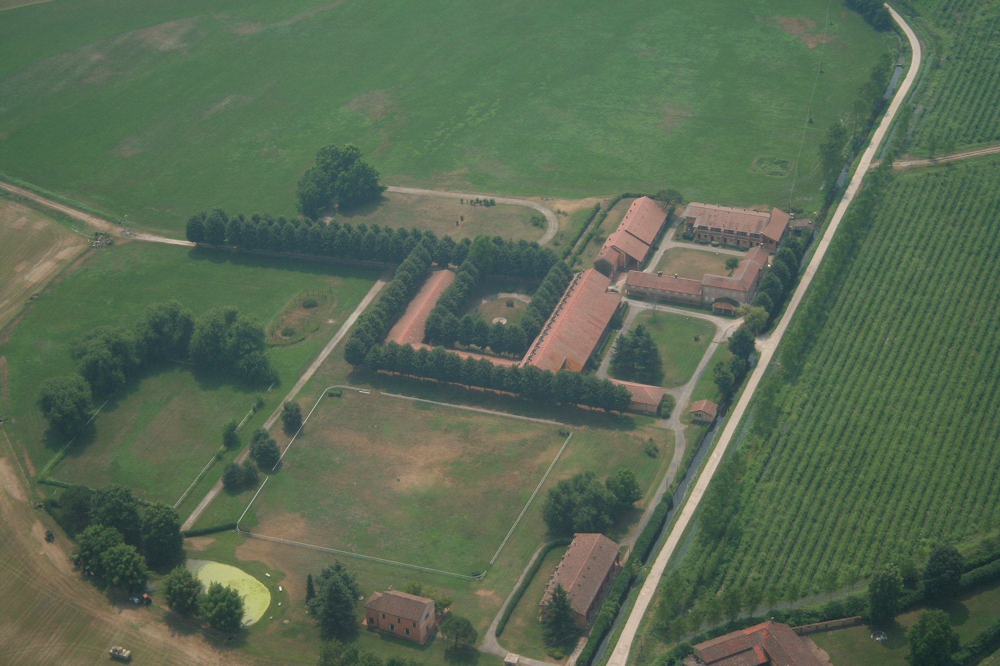
Estate for sale · Parco del Ticino, Milan
A sixteenth-century equestrian estate of forty-five hectares, immersed in the protected Ticino Natural Park — thirty minutes from the centre of Milan.
From the sixteenth century to today — an estate where time has stood still, at the gates of Milan.
One of Lombardy's oldest agricultural estates, set within one of Italy's great river parks. Forty-five hectares of level meadow, a historic farmstead and a complete equestrian quarter — its buildings offered to be renovated and shaped to the new owner's own vision.
The estate
Beyond the residences lie private roads, gardens, parking and a keeper's house. Beside the deconsecrated chapel, a small lake among bamboo and great carp composes its own quiet from the sound of water and wind.
The grounds leave ample room for tennis courts, swimming pools and gardens — the rare luxury of space, fifteen minutes from the ring road of a European capital.
The buildings are offered to be renovated and configured to your own brief — a private residence, a stud farm, a relais or a hospitality project — with scope to expand the existing footprint.
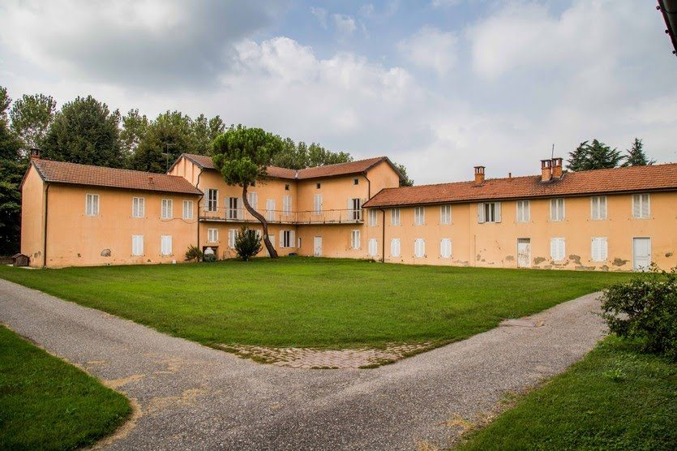
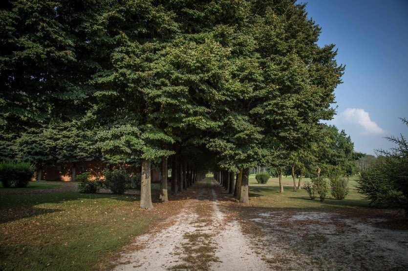
The tree-lined approach
Equestrian heritage
Above all, Santa Maria del Bosco was built for the horse. Stabling for eighty, nine tack rooms, a veterinary clinic, a farriery, a competition arena, training tracks, free-galloping paddocks and a one-kilometre straight.
This is where Molvedo was foaled — son of the legendary Ribot. The infrastructure remains, ready to return a stud farm or competition centre to its vocation.
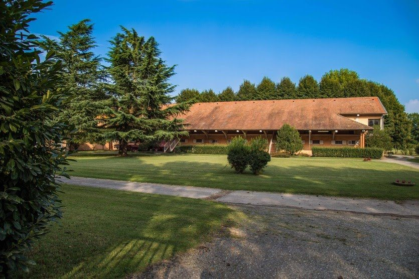
Five centuries
The estate grows around the sixteenth-century church of Santa Maria del Bosco, of Leonardesque school, facing the road to the north. By local tradition, the wife of Duke Galeazzo Maria Sforza walked these meadows and took in the poetry of the countryside.
The original nucleus of the cascina takes shape — a characteristic example of the region's rural architecture, recorded in the Teresian land cadastre in the form it keeps today.
A second farmstead is added to the south, articulated around two courtyards — one ringed by the residences, the other given to farming. The estate assumes its present form.
The estate is revisited with discretion, consolidating the complex while preserving its rural character and its origins.
Catalogued in the regional inventory of architectural and environmental heritage (SIRBeC, Regione Lombardia) and set within the Ticino Natural Park, the buildings are offered to be renovated and tailored to the new owner — with room to expand.
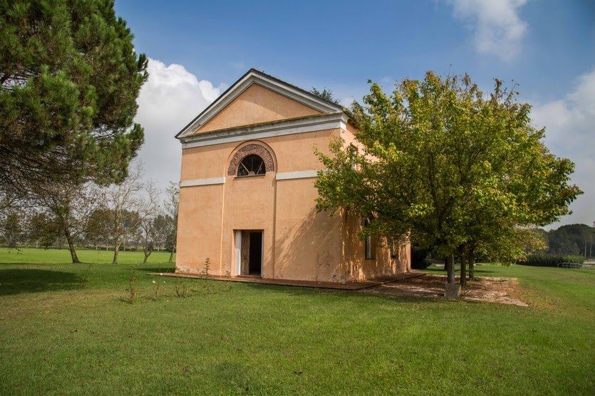
The heart of the estate
Now deconsecrated, the chapel is the origin around which the whole estate was composed. With the courtyards, the lake and the avenue of poplars, it forms a setting of rare cinematic quality.
The complex
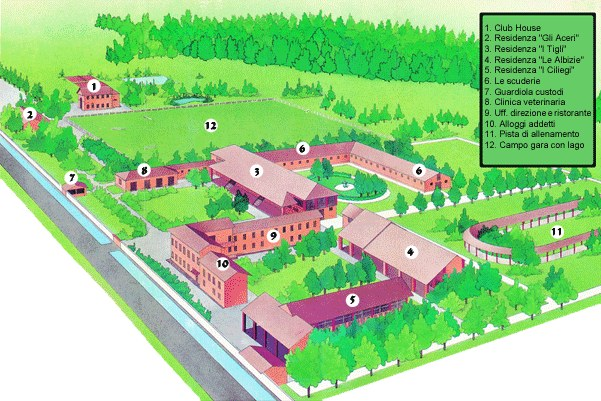
Four named residences — Gli Aceri, I Tigli, Le Albizie, I Ciliegi — alongside the club house, the stables and tack rooms, a veterinary clinic, management offices and restaurant, staff lodgings, a training track and a competition field with its own lake.
Possibility
Its built vocation — eighty boxes, clinic, arena and tracks ready to return to use.
Forty residences, restaurant, lake and grounds within a protected park, half an hour from Milan.
The chapel, courtyards and avenues form a natural set for weddings, productions and gatherings.
An established azienda agricola of forty-five hectares with hospitality, inside the Ticino Park.
Development potential — a significant volumetric increase is under discussion with the Municipality of Ozzero. Details available to qualified parties on request.
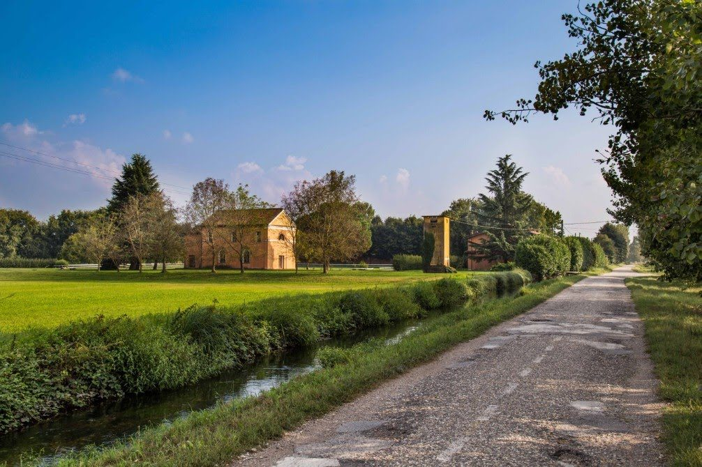
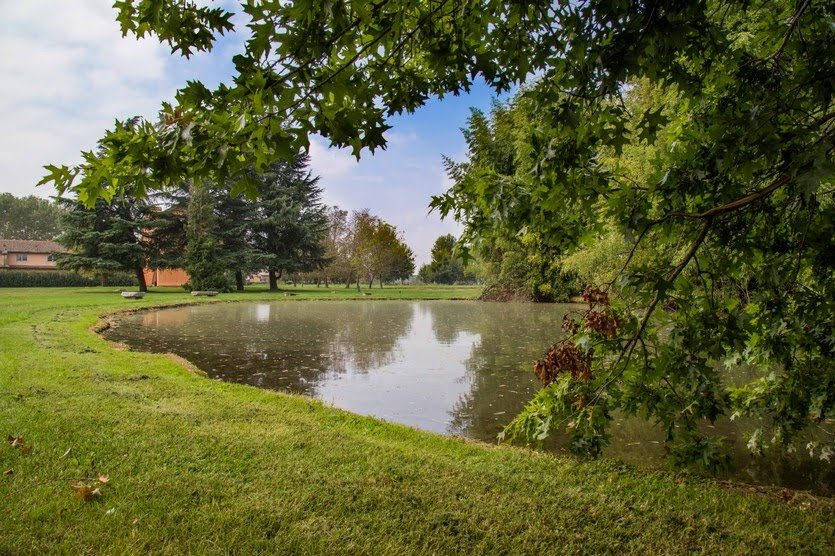
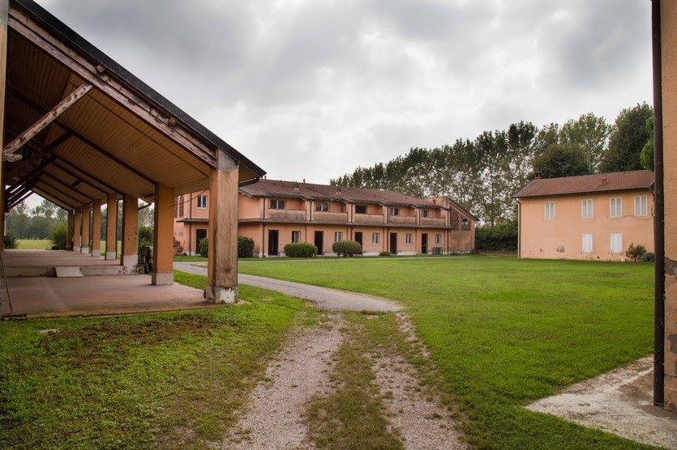
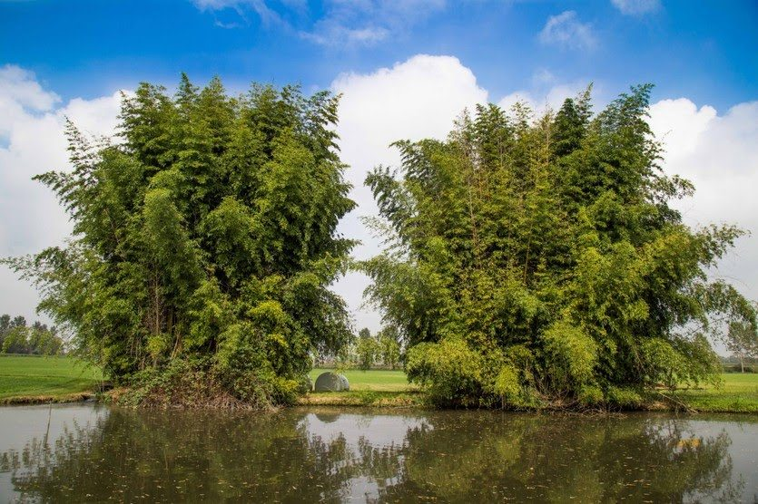
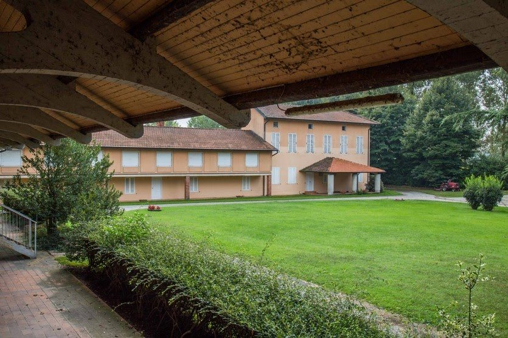
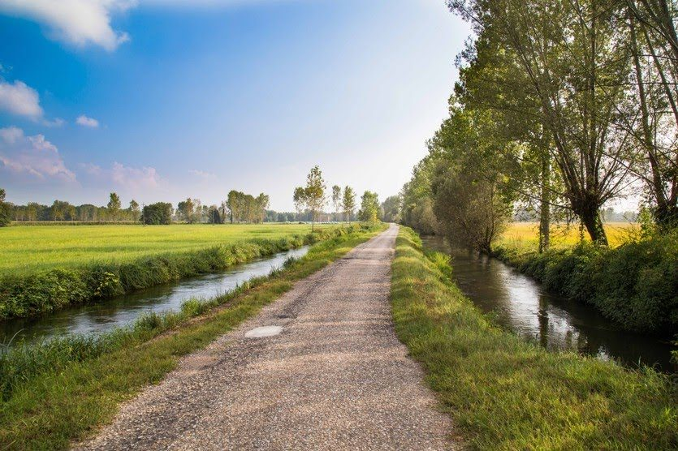
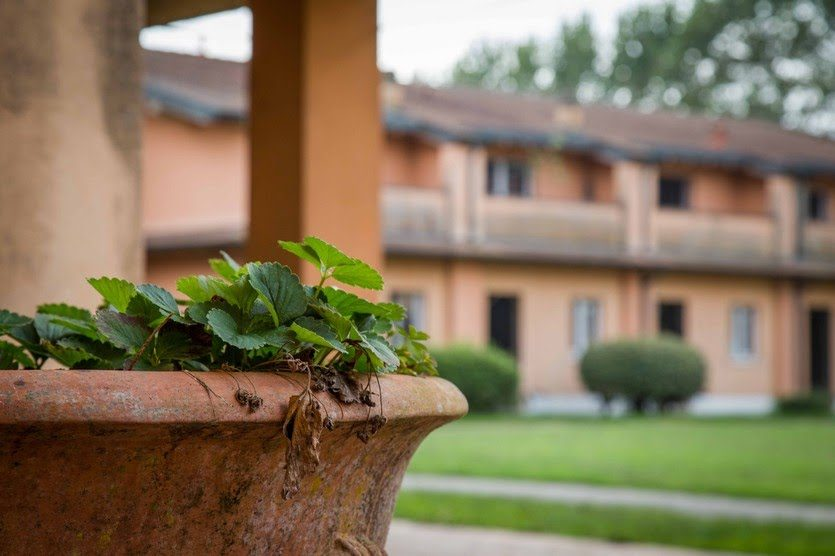
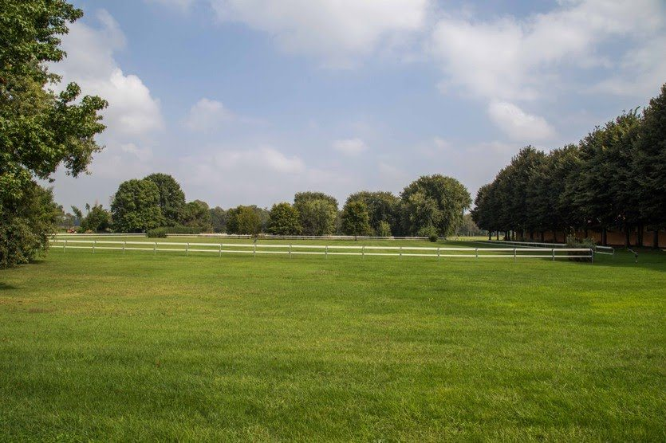
Location
Set within the Ticino Natural Park, on the plain south-west of Milan near Abbiategrasso — open countryside that remains, remarkably, within half an hour of the city and both its airports.
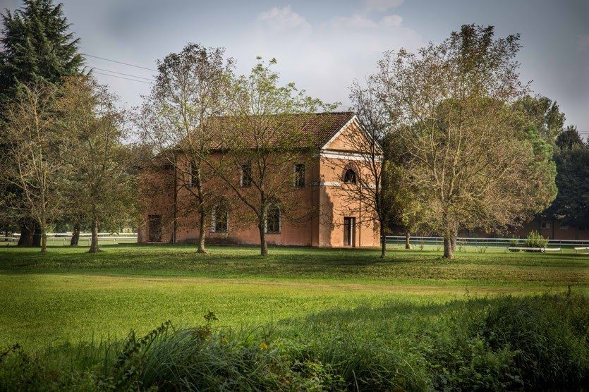
Private sale
A property of this rarity is presented privately, to qualified parties.